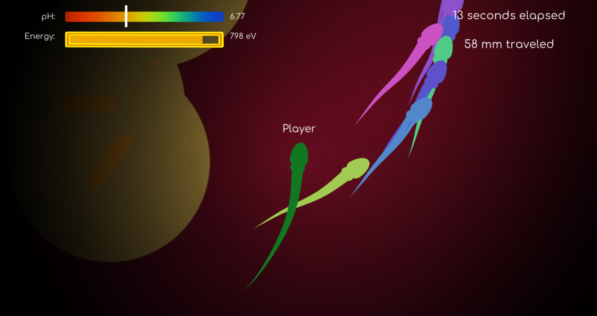

This project aims to build a 3D-remake of a 2D cute sex education simulation game, potentially including shaders.
Problem Description
One of our members, Circle Chen, has built this amazing game called Spermulator from the Spring 2022 Game Design and Development DeCal. The game can be found at this link: https://circlecly.itch.io/spermulator.
This game is a simulation of the journey of a sperm. The player controls a sperm cell and must navigate through various obstacles to reach the egg. Primary obstacles involving bacteria and cells that produce acid and base, which requires carefully managing the pH of the sperm. Furthermore, the sperm has limited energy budget, so movement has to be carefully planned. The game also includes a functional multiplayer component, where players race against each other to find the egg.

The game is designed to be both educational and entertaining, providing players with information about human reproduction while also challenging them to complete the game. In order to further enhance the depth of interaction and spatial immersion, we plan to remake everything in 3D, which would require applying knowledge on 3D modeling, animation, and potentially shaders.
Goals and Deliverables
What we plan to deliver is a 3D remake of the Spermulator game hosted on itch.io, where viewers could play this game. The game should run at 60 FPS consistently on a modern laptop. If possible, we can include playtests to gather player experience, entertainment, and immersion. All original game functions should be working. This would include:
Player controls
Game mechanics (pH, energy budget, collision detection)
NPC AI (bacteria, cells, competitor sperms)
Win/Loss conditions (reaching the egg, other sperms reaching the egg first)
Multiplayer
Tutorial level
The major logic of the game is already implemented in the original game, so what we build on top is introducing 3D modeling, rendering (for example, player vision, and potentially shaders), and animation to the game, to create an even more immersive experience.
If there is time after the base game runs in 3D, we will attempt to add shaders to enhance the visual experience of the game. The primary things we want to implement in shaders could be:
Fluid effects, which would enhance the biological realism, while illumination and reflections will improve the visual clarity and overall aesthetic appeal.
Illumination in the map
Light reflections from the cells and sperms
Schedule
Week 1: All team members familiarize codebase, pick up Unity. Start recreating assets in 3D, using modeling and UV Mapping (sperm, cells, map)
Week 2: Reprogram tutorial level, controls, game mechanics in 3D
Week 3: Reprogram AI, make sure multiplayer is still functional. Integration testing on the base game
Week 4: If time, shaders. Otherwise, bug fixing and optimization to prepare for the final showcase.
Resources
Unity Tutorials
Unity Support for Shaders
Photon PUN2 for multiplayer (this was used in the original game)